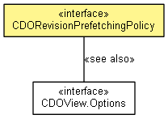

org.eclipse.emf.cdo.view
Interface CDORevisionPrefetchingPolicy
- public interface CDORevisionPrefetchingPolicy

A strategy interface to customize the revision prefetching behaviour of a view.
- Since:
- 2.0
- See Also:
CDOView.Options.setRevisionPrefetchingPolicy(CDORevisionPrefetchingPolicy)
NO_PREFETCHING
static final CDORevisionPrefetchingPolicy NO_PREFETCHING
loadAhead
List<CDOID> loadAhead(CDORevisionManager revisionManager,
CDOBranchPoint branchPoint,
EObject targetObject,
EStructuralFeature feature,
CDOList list,
int accessIndex,
CDOID accessID)
- Parameters:
revisionManager - Lookup availability of objects in the cache with
CDORevisionManager.containsRevision(CDOID, CDOBranchPoint).targetObject - Container of the list
- Returns:
- Should return a list of id's to be fetch.
- Since:
- 3.0
Copyright (c) 2011, 2012 Eike Stepper (Berlin, Germany) and others.